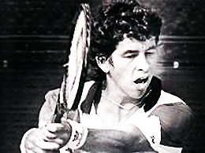
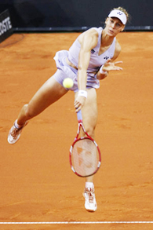
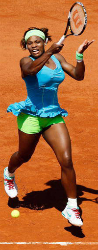
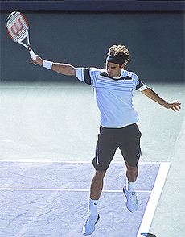
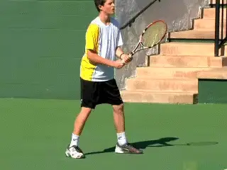
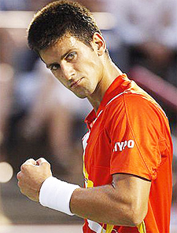

Fixing Stroke Phobias¶
By Allen Fox, Ph.D.¶

Robbie Weiss: a great talent with a bit of a serve phobia.
In my 17 years coaching the Pepperdine tennis team I saw many strange things, but none stranger than the serving affliction that Robbie Weiss suffered in his first year at school. Robbie was a great recruit and an even greater talent.
Before coming to Pepperdine he had won 13 national junior titles. But as a freshman he lost confidence in his serve - developed a phobia about it -- even though his action was quite technically sound.
At times he was so paralytic that he would double-fault four times in a row, once even whiffing. That's hard to do since the ball is almost stationary at point of contact.
Robbie did have periods where his serve worked properly, but in the back of his mind he was always afraid the trouble would return. And he usually didn't have long to wait - a double fault or two would reignite the whole horrible process.
Happy Ending
Luckily, his story had a happy ending in that Robbie eventually got over his phobia, played #1 for us, won the NCAA singles title, and as a professional, had a world-ranking high of 85 with wins over Lendl, Becker, Edberg, and Rafter at their peaks.

Elena Dementieva was able to overcome the yips.
The point is that stroke "phobias" can be fixed. Although versions of the "afraid to hit a stroke" syndrome afflict players of all levels, including some of the top pros, it can usually be conquered over time with effort and intelligent discipline.
A couple years ago, for example, Elena Dementieva got the "yips" on her serve. Her toss went haywire, and she was often off-balance and chasing the ball to hit it. But eventually she recovered.
Venus Williams sometimes loses confidence in her second serve. Like Robbie she gets scared of it, stiffens up, the velocity drops into the 60s, and the double faults begin. Both Venus and Serena also have periodic lapses of confidence in their forehands, when they spray balls yards past the baseline or sideline.
These excessive fear responses can be triggered by a technically weak stroke, but they can also occur with any stroke, even reasonably well produced ones like Robbie's serve or Venus and Serena's forehands.
I was recently working with a talented junior (call him Tom) who has a beautiful backhand that he is afraid to hit. He thinks it is a bad shot, and his syndrome is typical of this problem.

When Serena misses she doesn't think here comes trouble.
He hits a few good ones but then misses one and has what I call the "oh, oh here comes trouble" response. The fear that was lurking in the back of his mind quickly surfaces.
Now his hands stiffen, his coordination falters and he starts to poke the ball to keep it in the court. A bad cycle begins.
The worse he hits his backhand the more uncertain of it he becomes and the further it deteriorates. Before long the infection spreads to the rest of his game and disaster follows.
By contrast, when he misses a forehand, a stroke in which he has confidence, there is no fear reaction. He shrugs it off. Clearly, Tom's problems are mostly due to the "Oh, oh" response itself.
The Cure
What's the cure? As usual with psychological issues, understanding the problem is the first step in curing it. The second is realizing that you cannot completely solve certain problems, your only intelligent option being to make them better rather than worse.
The third is to become realistic rather than emotional. In this case, it is to realize that almost everybody has a weaker stroke. There is nothing terribly wrong with this, other than worrying about it. It may cost you a few extra errors, but you can win with it anyway if it doesn't rattle you. Even Federer has a weaker backhand, but when he misses it you can bet he doesn't have the "Oh, oh" response.

Everyone has a weaker side, even Roger Federer.
Your best solution to the problem of having (or believing you have) a weaker stroke is to conceptualize it as merely a probability issue. By this I mean that there is some probability that you will miss any stroke at any time, even your best ones.
Accept the reality that your probability of error may be greater with some shots than others. So what? This is true for everybody.
Once you have done your best in practice to make your stroke as good as you can, forget about it in matches, and accept its errors with no more emotional reaction than you have with any of your other strokes (which should be none). Above all, get rid of the "Oh, oh" response.
"You must believe in your strokes." You have heard top pros say something this, but they mean something different by it from the common conception.
They don't mean you must have absolute belief that a particular stroke is going to work properly every time. They know this is not possible.
They mean that once you get into a match your strokes are as good as they are going to get -- as good as your talent and diligence in practice have made them. So you must now be content with your game as it is, rely on it, lean on it, and assume that your strokes it will function well enough for you to win the match.

In a match, rely on your game and assume it is good enough to win.
Don't look around at shots other players can make but you can't and feel diminished. You can practice them after the match if you wish. When you miss, focus on relaxing and hitting the ball in the way you have practiced.
[[You can make small adjustments, of course, but don't discard your normal strokes. And by all means, don't let errors with one stroke affect your other strokes].]
Confidence comes from winning and is cyclical. It comes and it goes, but you would like to make the down cycles as short as possible.
Summary
In these articles we've looked at many issues regarding confidence. Your trick in building confidence is to win matches, but since winning matches is easier if you have confidence, you must figure out how to win matches when you don't have it. Winning them when you do is easy.
As we saw in the last article, one solution is to replace confidence with emotional discipline so you can avoid those total breakdowns that simply hand matches to your opponents.

Confidence leads to winning. Winning leads to confidence.
Winning may require a few extra errors from your opponent, but if you stay mentally strong you will eventually get them. Assume that the down cycle will end with your next match. If it doesn't, continue to make this hopeful assumption until it does.
Remember that all players make errors and all players have weaker shots. Accept your game where it is at the start of a match and use what you have to the best of your ability.
Sometimes the biggest problems players have relate not to their strokes or their errors but to their excessive negative reactions. Improvement is something that only comes on the practice court. Don't expect to hit shots in matches you don't already own.
Remember, confidence comes from winning, just as winning comes from confidence. Don't fall into the trap of believing that you get better by playing only better players. The reverse is probably true---that will only make you worse by damaging your confidence.
A substantial number of the matches you play should be against players you can beat. This not only develops overall confidence, it allows you to experiment with parts of your game you need to reach new levels, and develop confidence in these new aspects as well.
The bottom line---there are no magic confidence pills. But if you face reality and follow the suggestions in these articles, there is a great probability that you can improve your self belief and your results.
Read More From Allen!
Visit him at www.allenfoxtennis.net

Winning the Mental Match Dr. Allen Fox
Tennis is mentally the most difficult sport due to it's personal nature which makes winning and losing feel more
important than they are. In this new book, Allen offers his proven solutions to problems such as choking, reducing
stress, finishing matches, and developing confidence. Based on a life time of high level play and coaching success,
it's a must for all competitive players.
[ to
Order](http://www.amazon.com/Tennis-Winning-Mental-Allen-Fox/dp/0615407765/ref=sr_1_1?ie=UTF8&qid=1336083459&sr=8-1).

Winning may not be everything, but Dr. Allen Fox points out
eminently preferable to losing. In his new book, The
Winner's Mind, Allen lays out an original step-by-step
plan for succeeding at any of life's endeavors, based on
his first hand and very personal observations of the
careers of both world-class tennis players and successful
businessman. The bottom line is that even if you are not a
born champion--and only a tiny percentage of us are--you
can still use the success strategies of champions to tilt
the odds in your favor. Writing with brutal honesty and dry
humor, Fox lays out the common mental characteristics of
winners in sports and in life. He explains the critical
role of intellect over emotion. He analyzes the struggle
between ambition and fear and the insidious and pervasive
fear of failure that undermines so many of us. He then
outline how to confront and overcome these fears in your
life and career, even when they are initially subconscious.
Must reading from one of the great thinkers in tennis, and
a Renaissance Man in life. [ to
Order](http://www.tennis-warehouse.com/descpage-MIND.html).
To purchase this book you can also send a check for $17.95
to Allen Fox, 1120 Inverness Place, San Luis Obispo, CA.
- The price includes shipping.
Allen Fox PhD is a former world class player, a coach,
insightful analysts in modern tennis. A top 10
American player from the glory days before Open
tennis, Fox played many of the legendary greats, among
them Roy Emerson, Rod Laver, Stan Smith, and Arthur
Ashe. At Pepperdine he developed the men's tennis
program into an elite contender for national titles,
and gave Brad Gilbert the insights that became the
foundation for "Winning Ugly". His book Think to Win
is a modern classic. He has also starred in a series
of acclaimed videos, including Pro Secrets of Match
Play and Allen Fox's Ultimate Tennis Lesson.